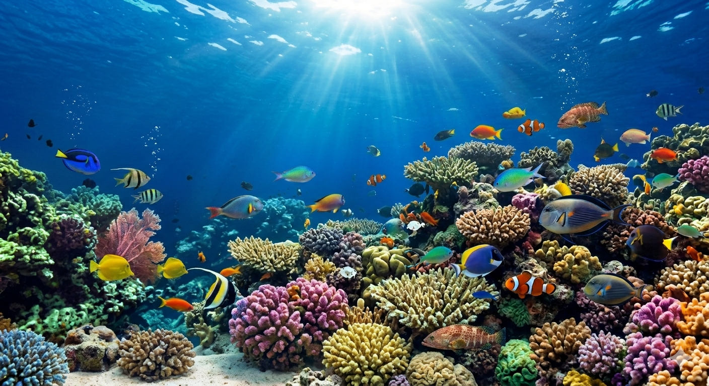

Panduan Pengambilan Gambar
Pelajari cara mengambil foto ikan yang tepat untuk hasil akurat
Lihat Panduan


Gunakan teknologi AI untuk mengidentifikasi spesies ikan dan menilai kesegarannya hanya dalam hitungan detik.
Unggah foto ikan dari galeri atau kamera Anda
Sistem memproses gambar (resize & normalisasi)
AI menganalisis spesies dan kesegaran ikan
Lihat hasil identifikasi lengkap beserta tingkat kepercayaan
Pelajari cara mengambil foto ikan yang tepat untuk hasil akurat
Lihat Panduan